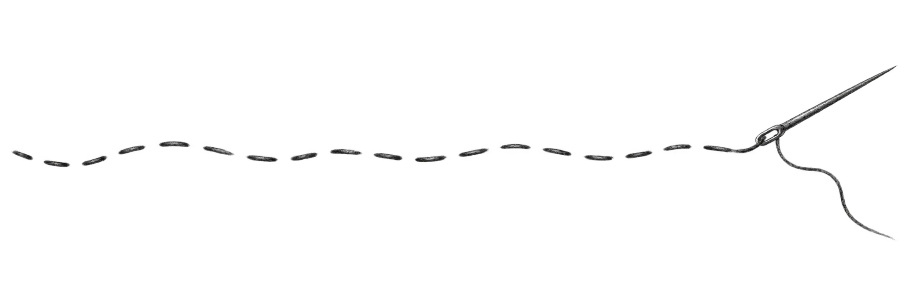

The bay
Ha Long
Karst rising from a sea gone still at dusk.


Before anything is chosen, there is a room with nothing in it. We sit in it a while. We ask about the street you walked, the song your mother hummed, the way your family argues across a table. Most of it will never appear on the day. One or two things will, and they will hold everything else in place.
We work slowly at the beginning so the end can look like it simply happened. A chair moved three times. A colour matched to a memory instead of a season. Vietnam is not the backdrop here. It is the ground the day stands on.
We arrive with questions, not a proposal. What you tell us in the first hour is rarely about the wedding. Someone mentions a coastline. Someone mentions a grandmother who refused to sit down at her own party. We write it down. None of it is a brief yet, and none of it has to be. The room only has to open.
Over the following weeks, one thing keeps coming back. It arrives in a different sentence each time, and neither of you notices you are repeating it. We do. That is usually the shape of the day: a way of feeding people, a phrase in a language your guests will not all speak, an hour of the evening you both keep protecting. We stop there and stay.
Only then does the drawing start. The idea has to survive contact with a floor plan, a supplier's lead time, a season of weather. When it does, the seating, the flowers, the order of speeches and the hour the music changes all answer to the same thing. You will not see the reasoning on the day. You will feel that nothing is arguing.

A wedding is not a template we resize. It is closer to a piece of furniture — built once, by hand, to fit the room it will live in. We start with the site: the slope of a rice terrace outside Hoi An, the particular gold of afternoon light off Da Nang's coastline, the sound a wooden gate makes when it opens onto the sea. Only then do we begin to design. Nothing here comes from a catalogue.
We plan every aspect of a detailed wedding plan in a city wedding and surrounding areas from Hanoi and Saigon.
We create bespoke premium wedding styling package that is all about Aesthetics and atmosphere creation.
We offer elopement wedding package in various cities across Vietnam to ensure your adventure is being planned perfectly.
For couples hoping to get married in a special destination in Vietnam, we offer a destination wedding planning service.
We strive to create weddings that look and feel, undoubtedly, like you.


Each begins with one small truth.
The rest is made around it.


Vietnam enters the work through what can be seen, heard and held. A colour can carry a memory. A place can set the scale of a day. A welcome can stay with a guest long after the evening ends.
Karst rising from a sea gone still at dusk.

A slow river, lotus-strewn, between limestone walls.

Salt light, and a sea that holds the whole day.
Tell us the part that has stayed with you. We will begin there.